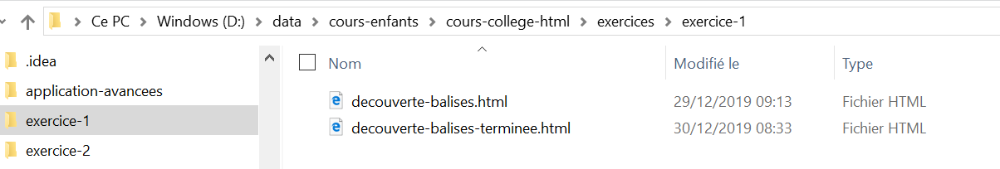

Création d'une page Web
Qu'allons nous faire?
Réaliser une page permettant de saisir et lister ses ami-e-s
La page Web à réaliser (version avancée)
Ateliers: présentations puis réalisation
Ne pas hésiter à m'interrompre quand vous avez des questions
Gestion de mes ami-e-s
ExempleQu'est ce qu'une page Web (page HTML)?
- Document(page) unitaire constituant un site web (internet)
- Page constituée de marqueurs(balise) HTML
- L'HyperText Markup Language est le langage de balisage conçu pour représenter les pages web
- Un navigateur interprète les balises HTML
Exercice 1 - Utilisation des balises HTML
- Créer un fichier avec l'extention .html
- Ouvrir le fichier

Exercice 1 - Utilisation des balises HTML
Saisir des balises suivantes:<html> <head> </head> <body> Mon texte </body> </html>
Atelier 1 - A retenir
Une page web est l’élément unitaire constitutif du site web. Elle est formée d’éléments visibles et invisibles à l’oeil. Les éléments visibles sont le texte, les images, les animations et vidéo. Les éléments invisibles sont composés de codes interprétés par le navigateur pour assurer la mise en page des éléments visibles et leurs éventuelles interactions possibles avec l’utilisateur.
Comment mettre en forme le texte (les balises)?
- Utilisation des styles CSS (feuilles de style en cascade)
- Un style est indiqué à une ou plusieurs balises: présentation
- Style: mise en page, couleur, bordure, affichage ou non...
- En cascade car des attributs de style sont appliqués à la balise et à ses sous balises
Atelier 2 - Mise en forme, style CSS
Utilisation d'un éditeur en ligne: https://glitch.com/edit/#!/proud-actress

Atelier 3 - Comment interagir avec l'utilisateur?
Jusqu'à présent la page s'affiche et ne bouge plus, le contenu est statique.Question ouverte: Quels sont les interactions que l'on peut rencontrer?
Atelier 3 - Comment interagir avec l'utilisateur?
Question ouverte: Quels sont les interactions que l'on peut rencontrer?- Sur des évènements: clique, passage de la souris...
- Saisie de l'utilisateur
- Déclancher une vidéo
Atelier 3 - Le JavaScript: langage de programmation
- Exécuter du code en réponse à certains évènements se produisant sur une page web
- Faire des opérations sur des morceaux de texte (appelés en programmation « chaînes de caractères » ou « strings » en anglais)
- Afficher des informations à l'utilisateur
Atelier 3 - Le JavaScript: langage de programmation
Afficher une valeur
<div onclick="alert('ee');">
XXXXXXXXXXXXXXXXXXXXXXXXXXXXX
</div>
Atelier 3 - Le JavaScript: langage de programmation
Créer une variable, condition et afficher un message
var prenom_nom = "";
if(prenom_nom === ""){
alert("Vous devez renseignez votre prénom et votre nom");
}
Atelier 3 - Le JavaScript: langage de programmation
Regrouper des lignes de code dans une fonction
function testUneFonction(){
alert("Ceci est un test");
}
Atelier 3 - Le JavaScript: langage de programmation
Récupèrer une valeur saisie dans un champs, afficher une valeur
var prenom_nom = document.getElementById("nom_prenom_id").value;
if(prenom_nom === ""){
document.getElementById("ma_balise_id").value = prenom_nom;
}
<div id="ma_balise_id">avant</div>